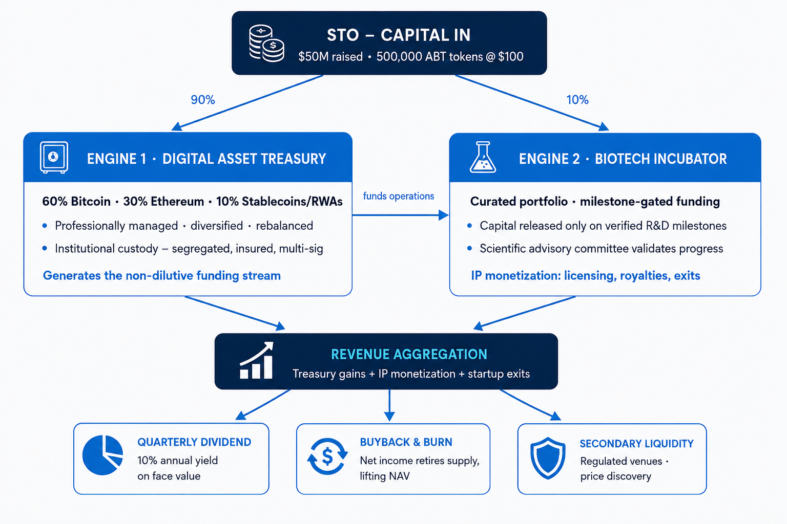

AgileBio Tech pairs a professionally managed digital-asset treasury with a curated biotechnology portfolio — turning a permanent balance sheet into patient, non-dilutive capital for long-horizon science.
The venture model that funds life sciences was built for software. A SaaS company can be built and exited inside a ten-year fund. A cancer therapy cannot — and the mismatch strands brilliant science between grant money that has run out and commercial capital that arrives too late.
Drug development outlasts the patience of conventional fund structures. The pipeline of ideas isn't the bottleneck — the fund-life clock is.
Founders give up ownership precisely when their work starts to matter, on terms set by capital that holds all the leverage.
Capital enters once through the STO, funds two engines that feed a shared revenue pool, and returns to token holders three ways — while monetized science recycles back into the treasury to compound the loop.

90% of the raise is held as a diversified BTC / ETH core with a stablecoin and tokenized-RWA sleeve, in segregated, insured, multi-signature custody. Its appreciation funds everything downstream — non-dilutively.
A curated portfolio where capital is released only against milestones an independent committee has verified, then monetized through licensing, royalties, and exits — diversifying the enterprise away from single-asset volatility.
A perpetual-preferred security token that pays a quarterly dividend, accretes through rules-based buyback-and-burn, and trades on regulated secondary venues for genuine liquidity and price discovery.
Calibrated to Bitcoin's actual five-year performance — an average annual return near 52%, a best year of +165% and a worst of −65% — and run from a prolonged crypto winter to a sustained bull market.
All figures are illustrative and scenario-dependent. They are not a forecast, an offer, or a guarantee of any outcome.
Source: AgileBio Tech five-year model, calibrated to Bitcoin's 2021–2025 performance (avg. annual return ~52%; best +165%, worst −65%). Treasury seeded at $45M (90% of a $50M STO).
Source: AgileBio Tech model. NAV per token derived from treasury value plus monetized IP and exits, net of fees, divided by tokens outstanding after buyback-and-burn. $100 face value at issue.
Source: AgileBio Tech model. Cumulative net income = treasury gains + IP monetization + startup exits, less management fee and operating expense. The Bear path dips negative before recovering.
Source: AgileBio Tech model. Five-year CAGR to token holders by scenario, combining NAV accretion and reinvested dividends. Bear preserves capital (~3%) while continuing to pay a dividend.
Source: AgileBio Tech model. One-at-a-time ±20% shift on each driver from the Moderate Year-5 base of $1,549. Digital-asset returns dominate; IP revenue and exits are smaller, less volatile contributors.
Source: AgileBio Tech model. Annualized volatility (x) vs. average annual return (y) by scenario. The Moderate scenario sits toward the favourable low-volatility, high-return region.
Source: AgileBio Tech model, Moderate scenario, Year 5. Builds from treasury gains through IP and exits, less management fee (~$22M) and operating expense (~$7M), to net income of ~$211M.
Source: AgileBio Tech capital structure. Of the $50M raised, 90% funds the managed treasury (Bitcoin 54%, Ethereum 27%, stablecoins & RWAs 9%) and 10% the operating reserve.
The structure is designed to make risk legible and bounded — not to pretend it's small. Each principal risk has a structural answer, not a rhetorical one.
A treasury weighted to BTC/ETH carries real price risk; the returns that make the upside compelling can compress hard in a downturn.
Trials fail, timelines slip, and not every IP asset monetizes. Frontier science is intrinsically uncertain.
Rules in digital assets and life sciences keep evolving, and early secondary trading may be limited.
Close the $50M STO, secure regulatory approvals, deploy the treasury, and stand up independent governance and custody before capital moves.
Recruit the first cohort of 5–7 startups under a milestone-gating engine, publish daily NAV, and secure a compliant secondary-market listing for the ABT token.
Execute the first IP monetization deal, expand to 10–15 companies, and activate the rules-based buyback-and-burn program.
Achieve the first portfolio exit, scale to 20–25 companies, reach consistent profitability, and explore a second therapeutic area or fund.
We're inviting a limited number of accredited and institutional investors to review the confidential offering memorandum, full financial projections, and legal structure.